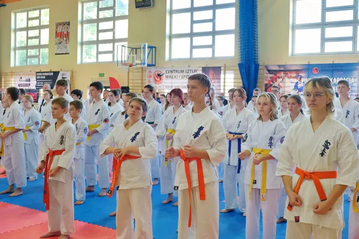
Karate dla dzieci
Pierwsze kroki w Karate Shinkyokushin: koordynacja, gibkość, siła i zasady etykiety dojo. Najmłodsi zaczynają w wieku 5 lat.
Początkujący: wt i czw 17:30
Średniozaawansowani: pon i śr 17:30
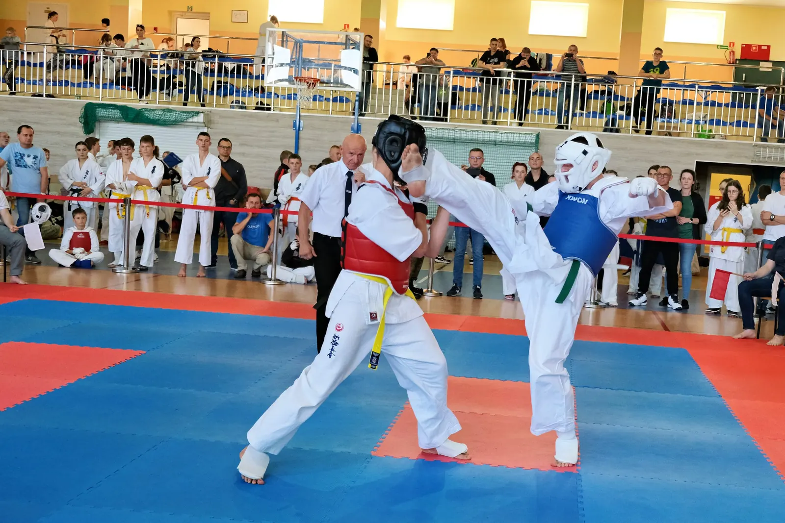
Treningi karate shinkyokushin i boksu dla dzieci od 5 lat, młodzieży i dorosłych. Prowadzimy je w Leżajsku od 2010 roku.
Trenują u nas dzieci od 5 lat, młodzież i dorośli. Grupy są podzielone według wieku i zaawansowania, więc cała rodzina może ćwiczyć w jednym klubie.

Pierwsze kroki w Karate Shinkyokushin: koordynacja, gibkość, siła i zasady etykiety dojo. Najmłodsi zaczynają w wieku 5 lat.
Początkujący: wt i czw 17:30
Średniozaawansowani: pon i śr 17:30
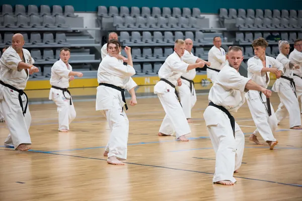
Kihon, kata i kumite. Najlepsi startują w zawodach, także międzynarodowych, i walczą o miejsce w kadrze Polski.
Grupa zaawansowana: pon i śr 18:30
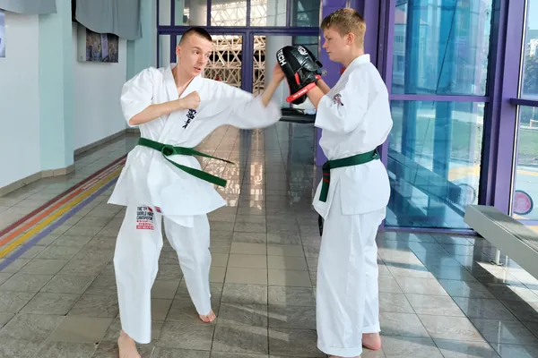
Technika ciosów, praca nóg, kondycja. Do tego samoobrona, czyli praktyczne reagowanie w sytuacji atak i obrona.
Boks: wt i czw 18:30
Zajęcia odbywają się w dwóch szkołach w Leżajsku.
Nie wiesz, do której grupy pasujesz? Zadzwoń albo wyślij zgłoszenie, dobierzemy grupę.
Karate Shinkyokushin wyraża swoje ideały w japońskim znaku Kokoro, który oznacza serce i umysł. To symbol rozwoju ludzkich serc i umysłów, nawiązujący do koncepcji Masutatsu Oyamy, twórcy Karate Kyokushin.
Treningi prowadzimy zgodnie z zasadami treningu sportowego i z szacunkiem dla tradycyjnej etykiety dojo. Dzięki temu ćwiczący budują charakter:
Choć cel jest wzniosły i odległy, to droga do niego zaczyna się tu i dziś.
Centrum Sztuk Walki i Sportu założyli w 2010 roku Adam Dziki i Adam Wylaź, trenerzy i instruktorzy Kyokushin karate. Dojo powstało w Leżajsku i Giedlarowej, a fundamentem klubu do dziś jest Kyokushin.
Praca całego zespołu przynosi medale w kategoriach dzieci, kadetów, juniorów młodszych, juniorów i seniorów. Organizujemy z innymi klubami obozy sportowe i seminaria sztuk walki, a w Leżajsku odbywa się Puchar Podkarpacia Karate Kyokushin.
Dziś treningi odbywają się w Szkole Podstawowej Nr 2 i w Zespole Szkół Licealnych im. Bolesława Chrobrego.
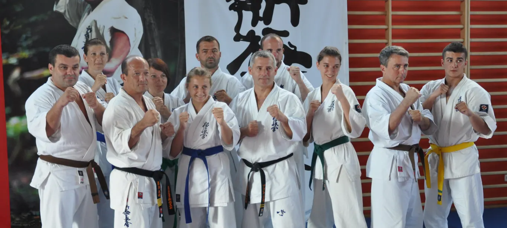
Kadra CSW Leżajsk
Puchar Podkarpacia Karate Kyokushin w Leżajsku, Romanian International Cup w Sibiu, obóz letni w Tarnowie.
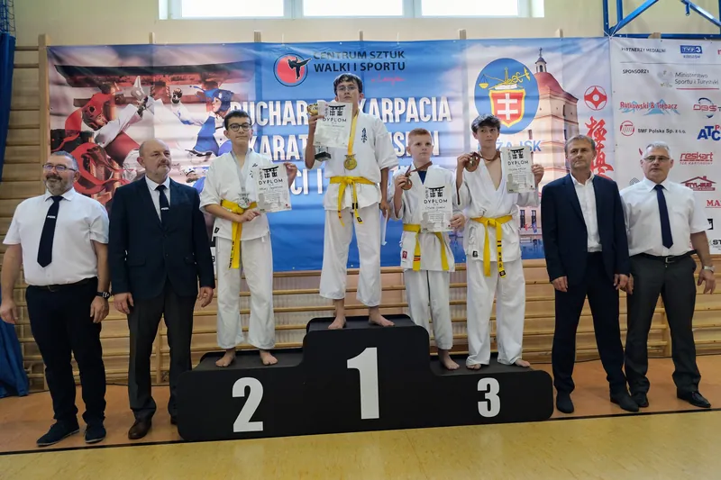
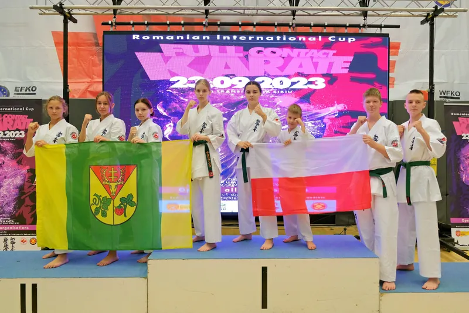
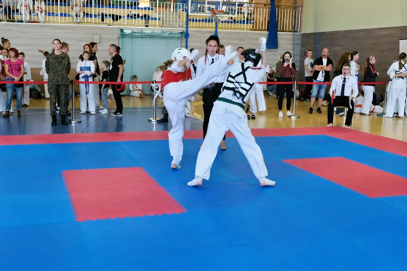
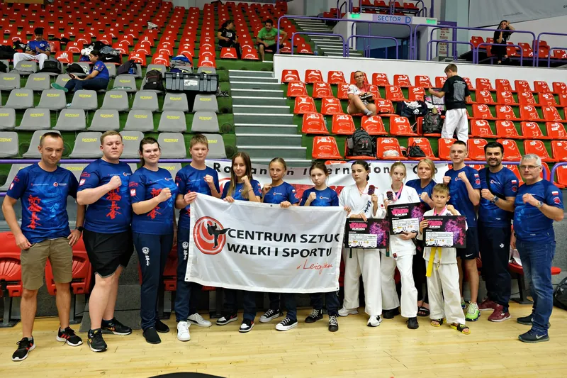
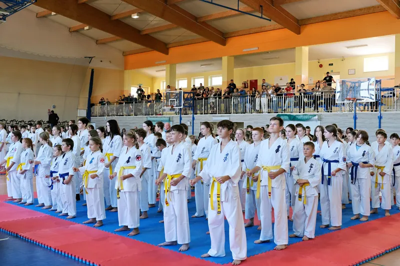
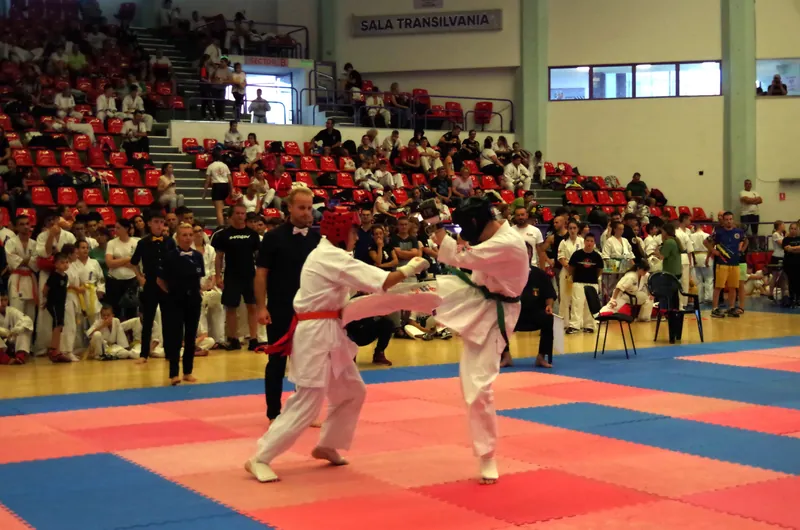
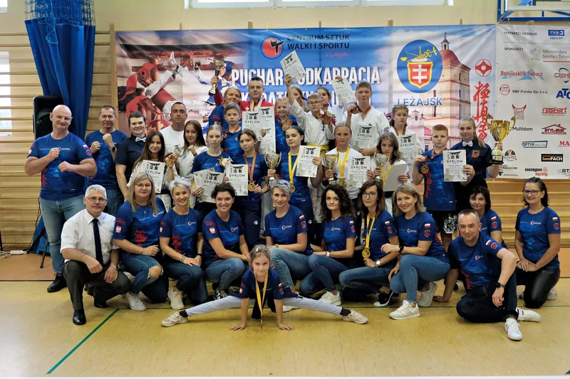
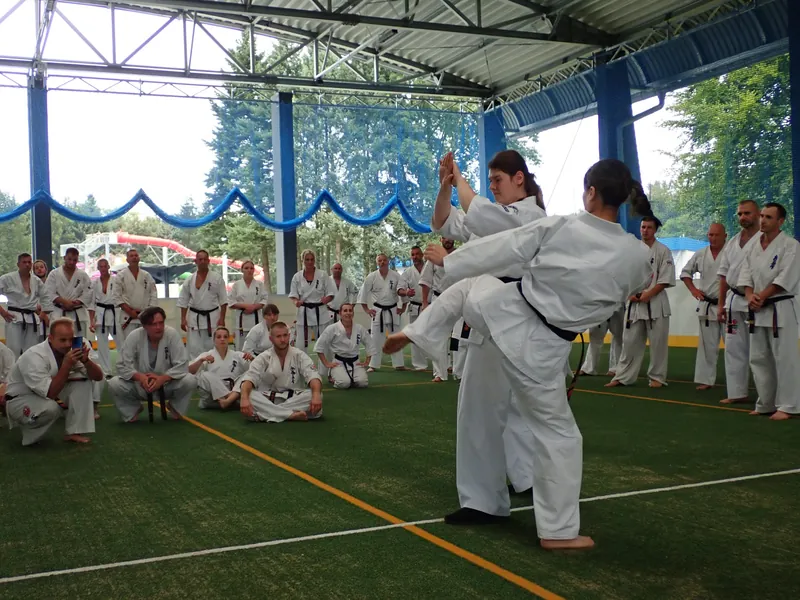
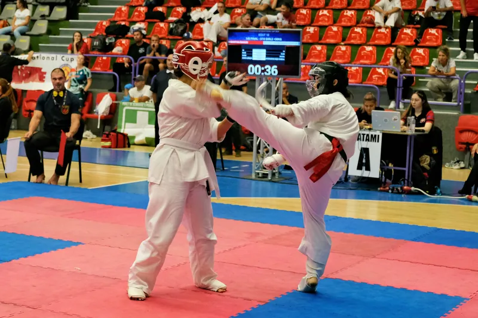
Zostaw numer, oddzwonimy i dobierzemy grupę.